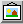

Amaya allows you to use client-side image maps.
To create a new image map, you must create the image element first, either by choosing Image from the Types menu or by clicking on the  button. This brings up a dialog box that lets you enter the file name of the desired image.
To create an area in a image, select the image or an existing area of that image. Then choose Rectangle, Circle, Polygon from the Area Map submenu of the Types menu, depending on the shape of the new area you want to create.
When the area has been defined, you must enter the target of the link associated with that area. Just click on the target (or enter its URL if it is not displayed), in the same way as you create links.
When the area has been defined, you can move this area:
Either by direct manipulation - combining the Control key with the Left button of the mouse within an area of image map allows you to move this area;
Or by editing the coords attribute of the area in the Structure View.